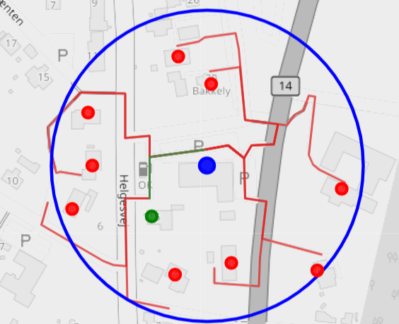

Geospatial Proximity Engine
An exact, network-aware method for classifying weighted target locations by their directed route distance from one or more sources.

Given a set of sources, the engine identifies the targets reachable within a specified network distance. Proximity is measured along a directed transport network rather than as a straight line; the radius may be expressed as routed metres or as duration using an assumed average movement speed.
Targets may represent addresses, stores, service points or lead-related locations. Each target may carry a weight that is aggregated after classification.
Geographic distance is used only as a mathematically safe screen. Classification is decided by the shortest routed distance on the network.
The documentation first defines the decision problem and its graph-theoretic basis. It then presents the four-step algorithm, the Python and OSRM implementation, and a small set of practical applications.
The final pages apply the method to site, competitor and lead classification, present the generated Folium map, and collect the central ideas in a concise conference poster.
- Introduction: the business and analytical problem.
- Theory: directed graphs, distance matrices and candidate pruning by the triangle inequality.
- Solution: candidate selection, routed matrix evaluation, radius filtering and aggregation.
- Implementation: Python orchestration and OSRM network distances.
- Applications: address coverage, competitive-site classification and weighted lead analysis.
- Poster: a compact visual summary of the theory, algorithm and use cases.